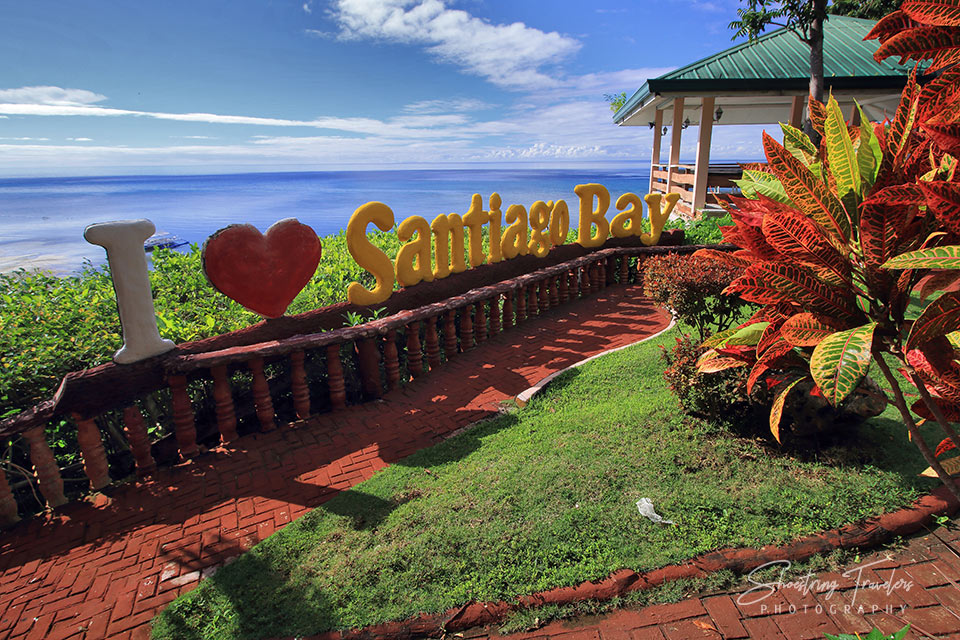

Top Attractions

Santiago Bay
A stunning white sand beach with crystal-clear waters perfect for swimming and relaxing.

Timubo Cave
Explore this enchanting cave with a natural underground pool.

Lake Danao
The largest lake in Cebu, perfect for kayaking and nature sightseeing.